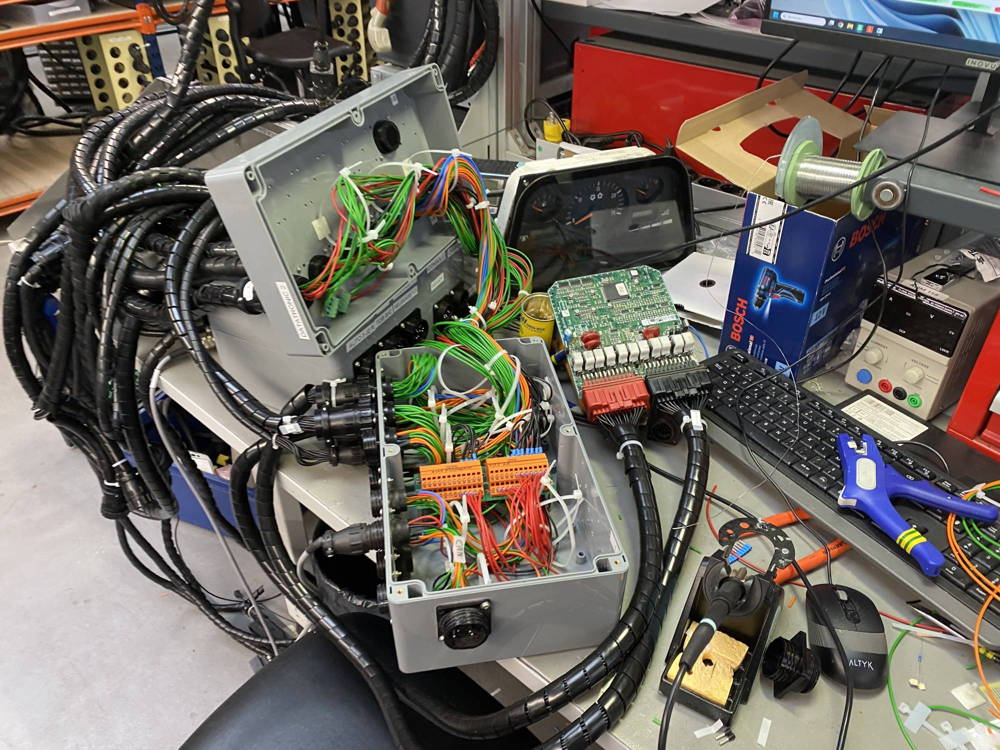

Étudiant en BUT GEII (Génie Électrique et Informatique Industrielle), je suis passionné par l'électronique, du prototypage jusqu'aux systèmes embarqués complexes en passant par l'automatisation.



Tout commence par une curiosité : comprendre ce qui se cache derrière chaque circuit, chaque signal, chaque ligne de code. De la première LED allumée aux systèmes embarqués les plus complexes.

Étudiant en BUT GEII (Génie Électrique et Informatique Industrielle), je suis passionné par l'électronique, du prototypage jusqu'aux systèmes embarqués complexes en passant par l'automatisation.